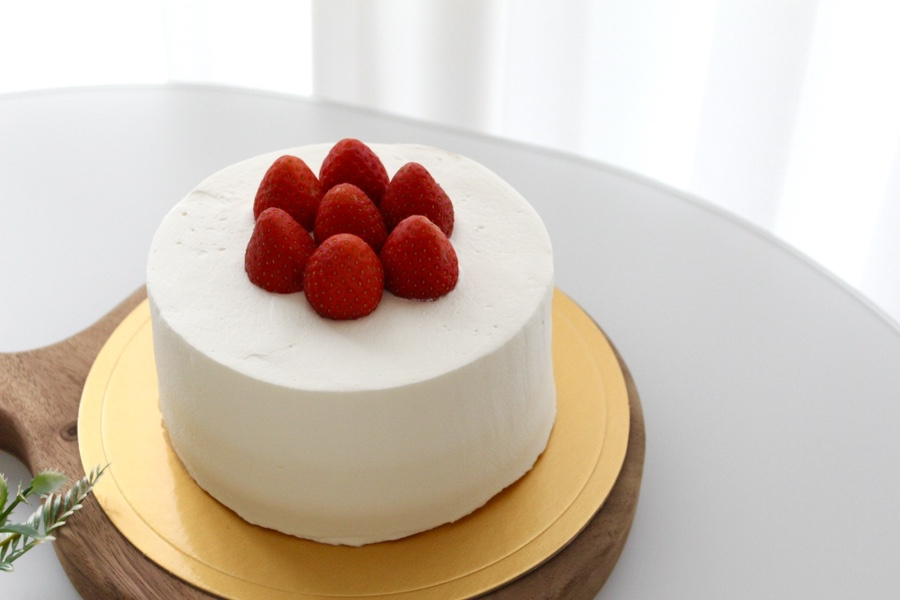

딸기 생크림 케이크 만들기

재료
- 제누와즈 1호, 딸기 한 팩
- 시럽 : 물 100g, 설탕 30g
- 크림 : 동물성 생크림 400g, 마스카포네 치즈 100g, 연유 20g, 설탕 15g
- 데코용 크림은 별도 준비
레시피 순서
- 연유와 마스카포네는 같이 섞어 주걱으로 잘 풀어준다.
- 이때 마스카포네 크림치즈는 차가운 상태에서 눌러가며 풀어준다.
- 베이킹 초보자들은 '갈바니' 브랜드의 마스카포네 크림치즈를 추천한다.
- 냉동실에 차갑게 살짝 얼려둔 생크림을 꺼내 설탕과 마스카포네 크림치즈를 넣어 60% 정도만 휘핑해준 뒤 냉장고에 넣어 3시간 이상 숙성한다.
- 생크림은 숙성 후 사용해야 크림의 질감이나 맛의 균형이 좋기 때문에 추천하는 방법!
- 제누와즈 시트를 만들 차례! 전란, 계란노른자, 설탕과 꿀, 바닐라 익스트랙을 넣고 중탕에 올려 손거품기로 살살 섞어가며 52~53도까지 온도를 높여준다.
- 이후 중탕에서 내려 고속으로 휘핑해주며 빠르게 거품을 만들어준다.